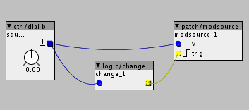

The modsourse object has a trig inlet, why is that, or rather I wish there was a modsource without trig, like the modsource_cc. If I want to control a parameter from a CV-input using mod source then I either have to convert my cv to midicc and use the cc witch seems like a detour or if I use modsource I suppose I need to have a clock signal or something to the trig input witch seems more complex than it has to be.
I suppose there are cases when you want the trig input, but a lot of times you don't, so a triggerless version of the object would be nice.
Mod source without trig input
mnskll
#1
all you need to do is connect a logic/change object to the trigger from the same source - no?
(and often you will want to use a change speedlim , to decimate the change frequency)
the issue we want to keep the number of modulations down, all cpu load!
sure we could have a triggerless form, but it would be identical to what you can achieve with two objects (with more flexibility), the later is usually preferred, so we don't end up with countless variants of objects.


johannes
#4
The model of parameters is optimized for infrequent changes of parameters. Some coefficients are only computed when a parameter changes, saving computation power. So parameter changes are event-driven rather than k-rate. Hence the trig input on the modsource object.
Forcing parameter changes at k-rate could be done, but is inefficient in computation.
The future path is convergence between parameters and inlets, while keeping the computation power savings when a parameter does not have an associated inlet in use.